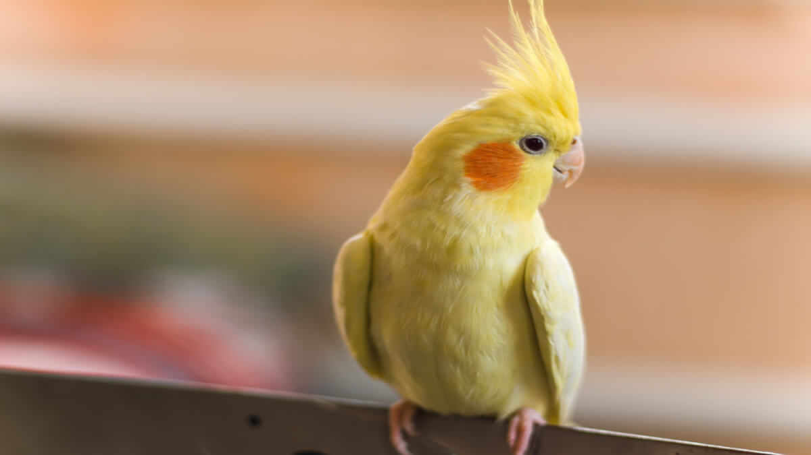

Cachorro
O cachorro é um dos animais de estimação mais comuns no Brasil.
Gato

O gato é conhecido por sua independência e carisma.
Papagaio
O papagaio é famoso por sua habilidade de imitar sons e palavras.
Peixe
Peixes são populares por sua beleza e tranquilidade.
Hamster

Hamsters são pequenos roedores adoráveis e fáceis de cuidar.
Coelho
Coelhos são conhecidos por sua fofura e energia.
Tartaruga
Tartarugas são animais de estimação tranquilos e de longa vida.
Periquito
Periquitos são aves pequenas e coloridas, muito sociáveis.
Porquinho-da-índia
Porquinhos-da-índia são roedores amigáveis e sociáveis.
Calopsita
Calopsitas são aves inteligentes e carinhosas.
Furão
Furões são animais curiosos e brincalhões.
Chinchila
Chinchilas são roedores com pelagem macia e densa.